系统核心代码约 1,250 行 Python 与 420 行 HTML/JavaScript，依赖只有 PyTorch、numpy、pandas、scipy 和 matplotlib。run_all.sh 可以一键复现“训练 → 预处理 → 诊断 → 出图 → 仪表盘”的全流程：在单卡 RTX 4090 上，12 组训练约需 30 分钟，其余分析步骤不到 1 分钟。仪表盘是纯静态文件（HTML + 2.1 MB 数据 + ECharts），双击即可离线打开，适合作为训练产物随检查点一起归档。全部源码、原始日志、处理结果和论文源文件都以 MIT 协议开源在 GitHub 仓库 https://github.com/RowanDVega/computer-visualization-final，目录结构与使用方法见仓库 README；克隆后直接用浏览器打开 web/index.html 即可体验交互式 Demo。
图 4 是仪表盘的首屏，焦点运行为 R09（学习率尖峰），对比运行为基线 R01，其余运行作为灰色背景。KPI 磁贴显示 R09 处于“✕ 危险”状态，共 4 个异常事件，最优验证损失 1.4753 出现在第 1100 步。损失曲线上，第 1200 步之后蓝色曲线陡然抬升，并且在剩余 1300 步中始终没有回到灰色背景运行所在的区域，红色色带标出了“持续退化”区间。更新比和学习率小图在同一位置出现了尖峰，与损失曲线对齐。右侧总览表按最优验证损失升序排列，四档健康徽章（✓ 健康、! 关注、▲ 警告、✕ 危险）用图标、文字和颜色三重编码。表 7 汇总了全部运行的结果。
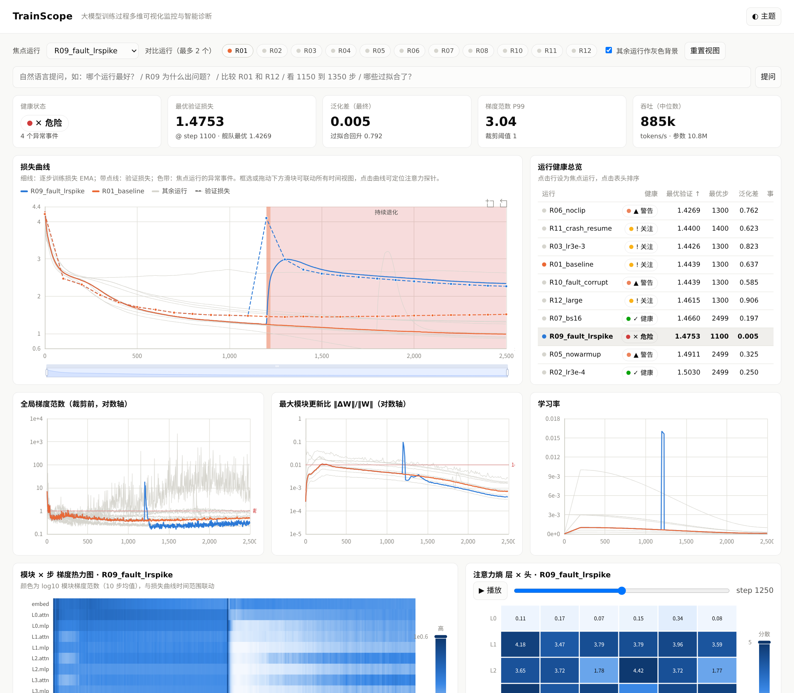
| 运行 | 最优验证 | 最优步 | 最终验证 | 泛化差 | 健康 | 主要事件 → 首要根因 |
|---|---|---|---|---|---|---|
| R06_noclip | 1.4269 | 1300 | 1.5544 | 0.762 | 警告 | 梯度爆炸@172 → 未启用裁剪；过拟合 |
| R11_crash_resume | 1.4400 | 1400 | 1.5016 | 0.623 | 关注 | 过拟合（续训本身无异常） |
| R03_lr3e-3 | 1.4426 | 1300 | 1.5877 | 0.823 | 关注 | 过拟合 |
| R01_baseline | 1.4439 | 1300 | 1.5146 | 0.637 | 关注 | 过拟合 |
| R10_fault_corrupt | 1.4439 | 1300 | 1.4954 | 0.585 | 警告 | 损失尖峰@1800 → 数据管道污染（98%） |
| R12_large | 1.4615 | 1300 | 1.6394 | 0.906 | 关注 | 过拟合 → 容量过剩（88%） |
| R07_bs16 | 1.4660 | 2499 | 1.4660 | 0.197 | 健康 | — |
| R09_fault_lrspike | 1.4753 | 1100 | 2.2669 | 0.005 | 危险 | 尖峰@1200 → 学习率异常（99%）；持续退化 |
| R05_nowarmup | 1.4911 | 2499 | 1.4911 | 0.325 | 警告 | 注意力塌缩@450–1400 → 缺少预热（79%） |
| R02_lr3e-4 | 1.5030 | 2499 | 1.5030 | 0.250 | 健康 | — |
| R08_nodropout | 1.5179 | 900 | 3.1976 | 2.997 | 关注 | 过拟合@1100 → 容量过剩/无 dropout（92%） |
| R04_lr1e-2_noclip | 2.4691 | 200 | 2.5191 | −0.003 | 警告 | 停滞、注意力塌缩 → 学习率过高；梯度爆炸 → 未裁剪 |
图 5 用 3×4 小多图同时展示 12 个运行的训练/验证损失和异常色带。小多图让每个运行拥有独立的坐标系，避免 12 条曲线叠在一起；所有子图共享 x、y 轴范围，因此可以直接比较。从图中可以一眼看出四种“曲线形态”：健康收敛（R02、R07）、收敛后过拟合（R01、R03、R06、R08、R12）、整体停滞（R04）和突发断裂（R09、R10）。
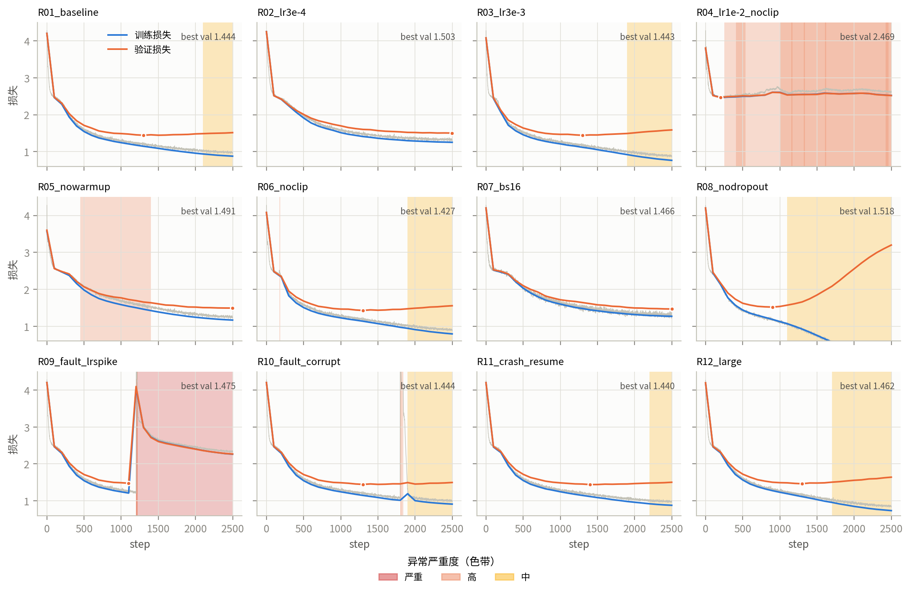
R09 在第 1200–1229 步把学习率放大了 25 倍（约 2.4e-2）。如图 7(a)，异常前训练损失约为 1.23，注入后逐步损失在 20 步内冲到 6.93，梯度范数从约 0.35 升到 18.5，最大模块更新比从 4.3e-3 跃升到 3.1e-2，超过了 1e-2 的经验上限。关键发现是损伤不可逆：学习率在第 1230 步恢复正常后，验证损失从 4.09（第 1200 步）只回落到 2.99（第 1300 步）、2.40（第 2000 步）和 2.27（第 2499 步），在剩下的 1270 步中都没有回到注入前的 1.48，相当于把模型打回了“二元语法”水平（约 2.5 nats）。
图 6(b) 的模块热力图解释了原因：注入之后，L0.mlp 到 L5.mlp 的中间层梯度下降了 1–2 个数量级（热力图中呈现近乎白色的条带），而 embed 和 head 两端的梯度仍保持原来的量级。这说明中间层已经进入饱和或“死亡”状态，模型基本上只靠嵌入层和输出层做浅层预测，所以损失停在 n-gram 统计的水平。PCA 轨迹视图（图 12(a)）也从另一个角度印证了这一点：R09 的轨迹在第 1200 步突然向 PC1 负方向跳跃了约 12 个单位，离开了健康运行所在的区域，之后再也没有回来。由于 PC1 的载荷在 12 个中间模块上几乎相等（约 0.3），它可以理解为“网络整体梯度强度”，这一跳跃正是中间层梯度坍缩的低维投影。
智能体的诊断如图 8 所示。Monitor 在第 1200 步（零延迟）同时报告了损失尖峰、梯度爆炸、更新比跃升和持续退化 4 个事件。Diagnostician 的取证工具测得事件窗口学习率是前序窗口的 12.9 倍、更新比升至 1.8e-2、验证损失同步上升 0.20，因此以 99% 的置信度判定为“学习率过高/调度异常”。对于持续退化事件，它把时间上相关联的前序冲击纳入证据，判定为“前序冲击造成的不可逆损伤”（86%）。Advisor 给出两条建议：检查调度器配置，以及终止当前运行、回滚到第 1100 步（验证最优）的检查点。按本实验的数据计算，如果在第 1230 步就采纳这条建议，可以节省剩余 51% 的训练算力，并保住 1.4753 的验证损失，而不是最终的 2.2669。
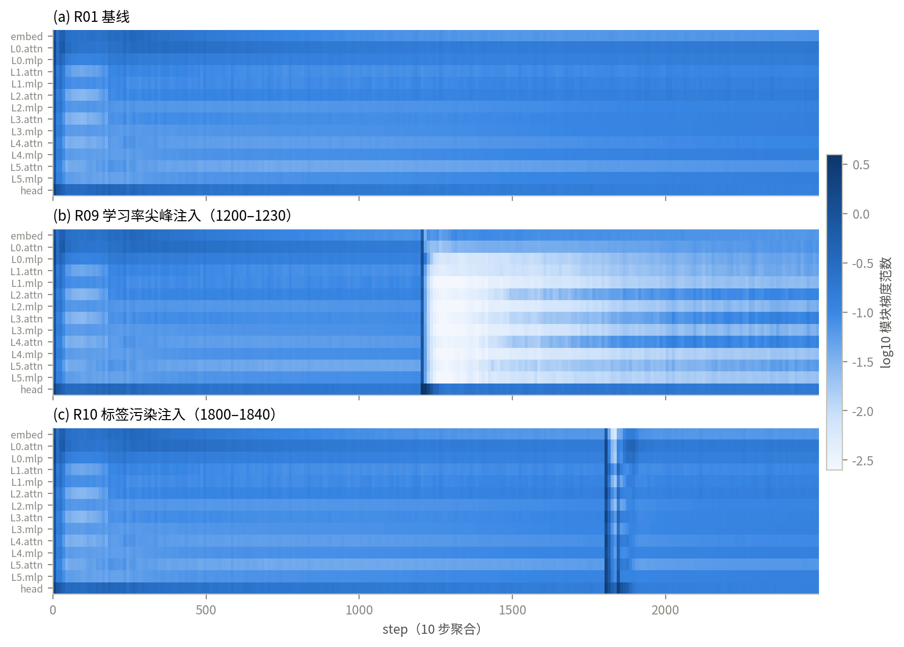
R10 在第 1800–1839 步把标签替换为随机字符。从损失曲线看，它和 R09 一样是一个巨大的尖峰（峰值 11.50，甚至比 R09 更高），只看曲线很容易误判为学习率问题。但多视图联动给出了完全不同的证据（图 7(b)）：
知识库据此以 98% 的置信度判定为“数据管道污染”，建议“隔离第 1800–1841 步对应的数据分片，校验 tokenizer/标签对齐与样本哈希；该段损失无需回滚”。这条建议与 R09 的“回滚”建议完全不同，体现了根因区分对实际决策的价值：对 R10 而言回滚是不必要的，平滑训练损失在第 2052 步就回到了污染前的水平，最终验证损失（1.4954）与基线（1.5146）相当，甚至略好。图 9 展示了用户在问答框中输入“R10 为什么出问题？”之后的界面：系统自动把焦点切换到 R10，把四个时间视图缩放到 1600–2091 步，并把注意力探针定位到第 1800 步，同时在回答框中列出事件、根因、置信度和建议。
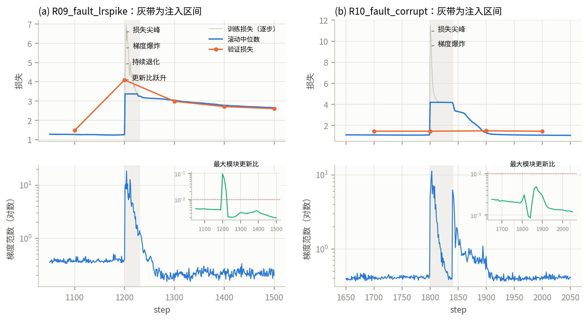
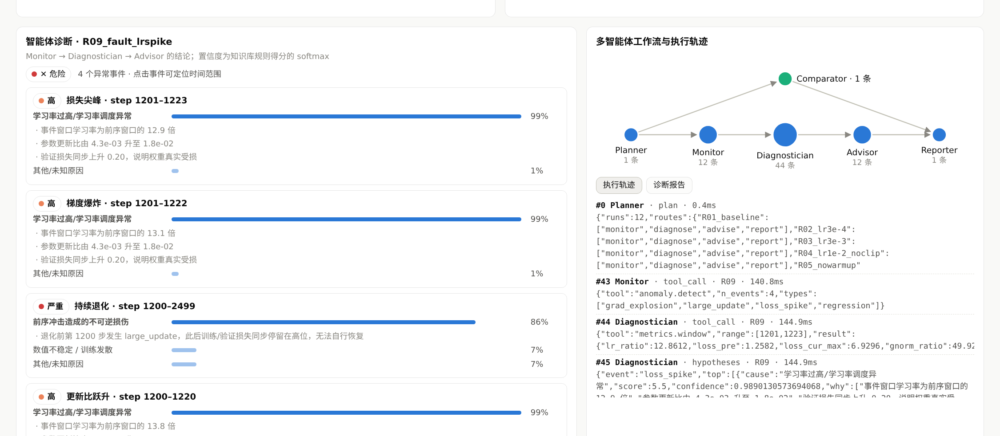
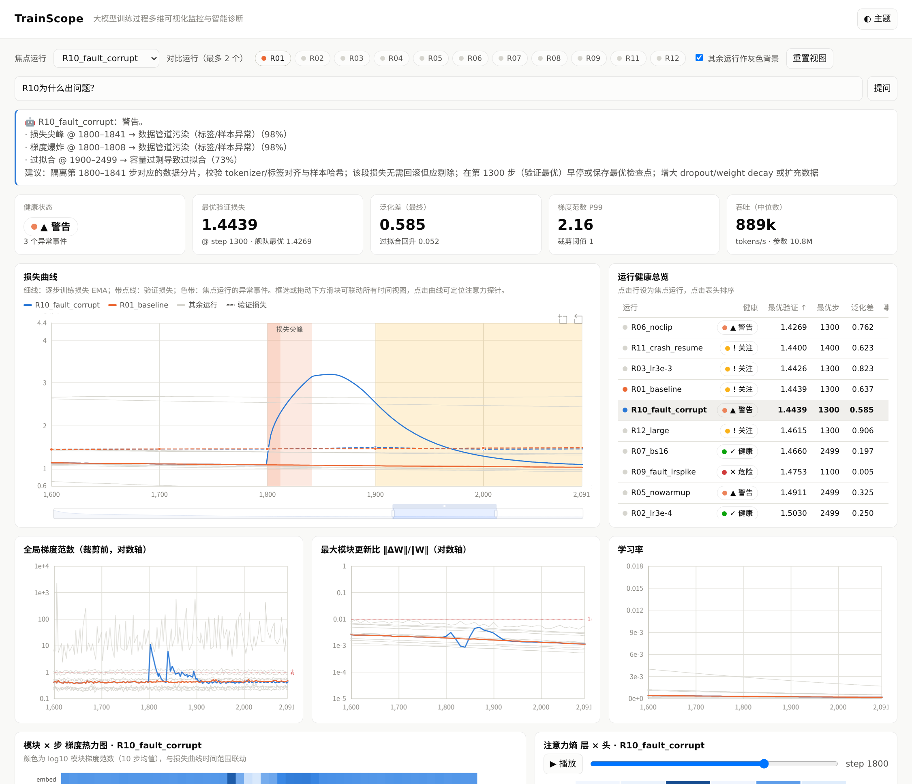
以注入故障的真实区间为真值，本文对 Monitor 做了事件级评估（表 8）。两个注入故障都在注入的第一步被检出（延迟 0 步），并且分别被 3 个和 2 个独立检测器同时命中，形成相互印证。在 6 个健康或仅有过拟合的运行（R01、R02、R07、R08、R11、R12）上，“突发类”检测器（尖峰、爆炸、跃升、发散、停滞、塌缩）的误报数为 0。全部 12 个运行共产生 22 个事件，其中 8 个梯度爆炸事件有 6 个来自不裁剪的 R04 与 R06，另外 2 个对应两次注入故障。合并间隔的设计也很重要：在 R04 中，第 411–540 步内相隔数十步的多次超阈值尖峰被归并为一个事件簇，否则同一个慢性问题会反复告警，造成告警疲劳。
| 故障 | 真实区间 | 检出 | 延迟 | 命中检测器 | 首要根因（置信度） |
|---|---|---|---|---|---|
| 学习率尖峰（R09） | 1200–1229 | ✓ | 0 步 | loss_spike, grad_explosion, large_update | 学习率异常（99%） |
| 标签污染（R10） | 1800–1839 | ✓ | 0 步 | loss_spike, grad_explosion | 数据管道污染（98%） |
| 健康运行误报 | — | 0 次 | 6 个运行共 15,000 步 | ||
需要客观说明的是，这一评估的规模很小（2 个注入故障），检测器阈值也是在同一数据上通过 EDA 调整的，存在过拟合于本数据集的风险。开发过程中本文也记录到了知识库的真实失败案例：早期版本把 R04 中孤立的梯度尖峰误判为“数据污染”（置信度 37%），原因是“验证损失不变”这条规则在没有训练损失飙升的情况下也会触发；加上“峰值比前序高 1.0”的前置条件后才得到纠正。这说明规则知识库需要用更多故障样本做系统的回归测试。
注意力熵视图揭示了损失曲线上看不到的内部动态（图 10）。初始化时所有头的熵都约为 4.55 nats（接近均匀分布），在基线 R01 中，平均熵在前 300 步迅速下降到 2.92，之后缓慢稳定在 2.3 左右。到训练结束，L0 层出现了熵仅为 0.04–0.10 的 3 个“尖锐头”，它们几乎只关注单个位置，类似于文献中描述的“前一字符头”（previous-token head）[20]；而 L1 层的各个头保持了 3.5 以上的高熵，负责聚合较长的上下文。这种按层分工的“头特化”是健康训练的标志，因此本文的检测器只对“全局平均熵 < 0.5”的塌缩报警，而不会对单个低熵头报警。早期版本的检测器曾因单头低熵对几乎所有运行误报，这是 EDA 修正的又一个例子。
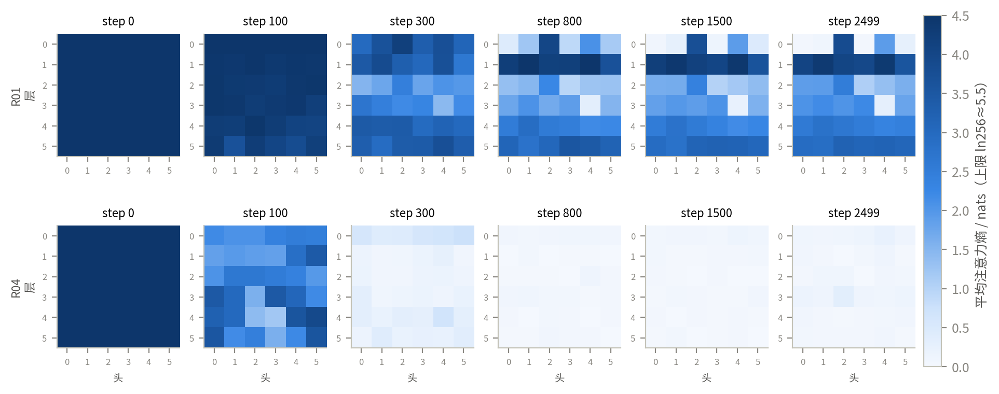
与基线相比，R04 的平均熵在 300 步内就塌缩到 0.27，此后一直低于 0.1，所有头都只关注单个位置，模型因此无法利用上下文，损失停在 2.5 附近（停滞）。更有启发的是 R05（去掉预热，其余与 R03 相同）：平均熵在第 100 步降到 1.33，第 800 步降到 0.36，触发了“注意力塌缩”告警（第 450–1400 步）；但它没有像 R04 那样一直停滞，在学习率按余弦衰减的过程中，熵逐渐恢复到第 2499 步的 1.26，最终验证损失达到 1.491，代价是收敛明显变慢（R03 在第 1300 步就达到 1.443）。图 11 是暗色主题下仪表盘对 R05 的分析画面：通过“看 300 到 1600 步”的问句完成缩放，注意力视图显示第 300 步时 L1–L5 层大部分头的熵已低于 1。这一现象与 Zhai 等人提出的“注意力熵塌缩”[17]以及 Wortsman 等人在小模型上复现的“注意力 logit 增长”不稳定性[19]相吻合：没有预热时，训练初期以峰值学习率更新 Q/K 投影，注意力 logits 迅速增大，softmax 进入饱和区。预热的作用正是在 logits 尺度稳定之前限制更新幅度[18]。智能体以 79% 的置信度把这一事件归因为“缺少学习率预热”，与文献结论一致。
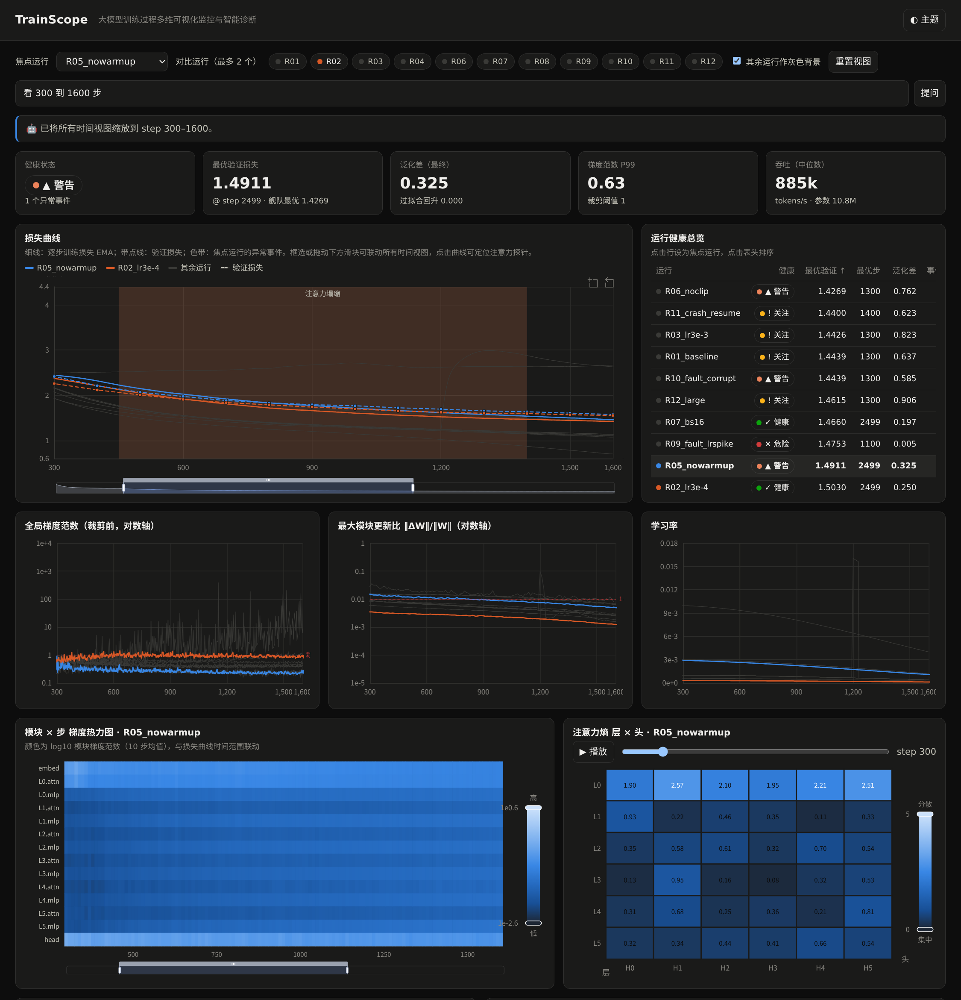
训练状态轨迹。图 12(a) 中，PC1 与 PC2 共解释了 14 维模块梯度空间 89.0% 的方差（69.4% 与 19.6%）。由图 12(b) 的载荷可知，PC1 在 12 个中间模块上的载荷近乎相等，代表“整体梯度强度”；PC2 的载荷由 embed/L0.attn（+0.55 以上）与深层/head（−0.1 至 −0.25）构成对比，代表“梯度在浅层与深层之间的分配”。健康运行的轨迹都从右侧起点出发，沿着一条狭窄的“走廊”向左下方缓慢移动，最终汇聚到相近的终点。R04 的轨迹先沿 PC2 正方向大幅上升到 +7，说明梯度高度集中在嵌入层和第一层注意力（与图 10 中 L0 的塌缩相互印证），然后在高位来回振荡，完全偏离了走廊。R09 的轨迹在注入点向 PC1 负方向剧烈跳跃。由此可见，一个 2D 轨迹视图就能把“健康/慢性异常/急性异常”三类训练形态区分开，非常适合作为大规模超参搜索时的概览视图。
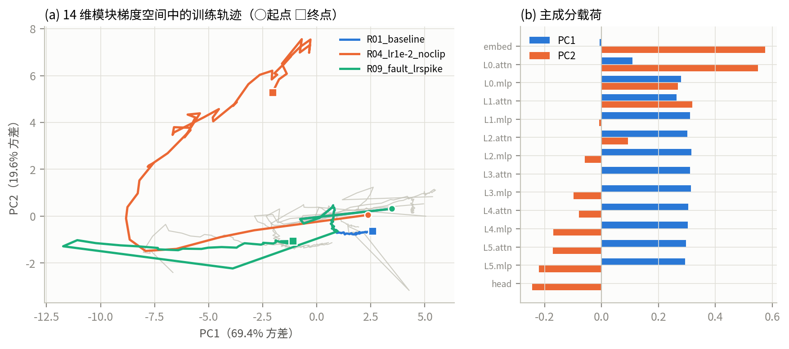
字符嵌入空间。对基线模型 65×384 的字符嵌入做 t-SNE（图 13(b)），呈现出非常清晰的语义结构：标点符号（, ; : ? ! . -）聚在左上角；元音（a e i o u 及其大写）聚在中心；更有意思的是，大小写字母成对出现，如 b/B、d/D、s/S、m/M、h/H、k/K、j/J、q/Q 等在图中紧挨在一起。为了确认这不是 t-SNE 的投影假象，本文在原始 384 维空间中做了定量验证：26 对大小写字母的平均余弦相似度为 0.451，而全部字符对的平均值只有 0.017；在 26 个小写字母中，有 25 个（96.2%）的最近邻正是自己的大写形式。也就是说，模型仅仅通过预测下一个字符，就自发学到了“大小写是同一个字母”这一抽象概念。相比之下，PCA 投影（图 13(a)）主要把大写字母与小写字母、标点分开，反映的是全局方差最大的方向：在剧本语料中，大写字母大多出现在行首和角色名中，上下文分布与小写字母差别最大。两种投影互为补充，也说明在需要揭示局部邻域结构时，t-SNE 比 PCA 更合适。
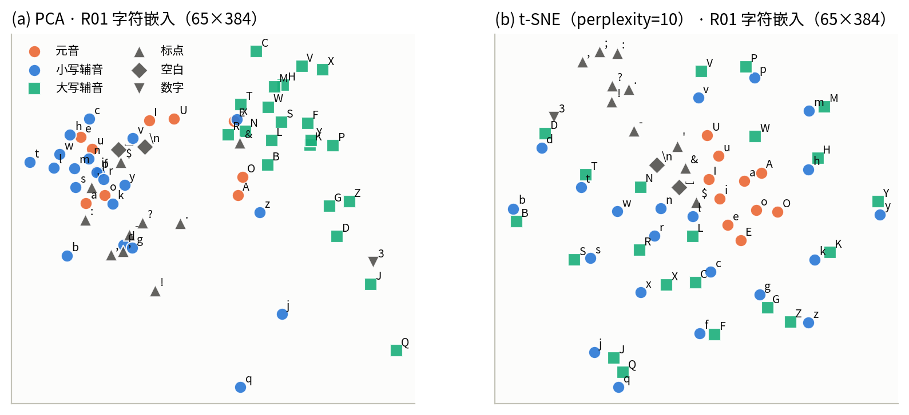
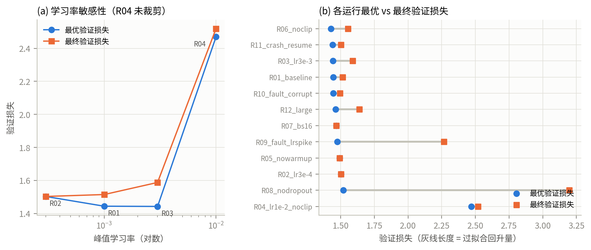
结合图 14 与平行坐标视图（图 15），可以总结出以下对训练决策有参考价值的规律：
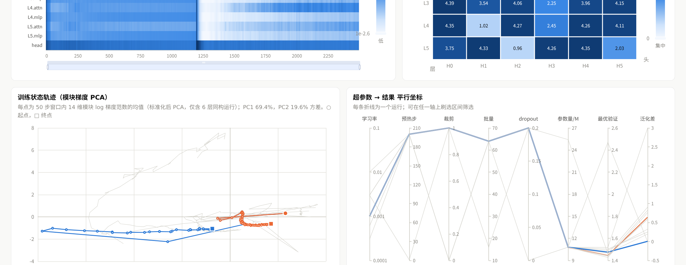
可视化与智能体的分工。在本系统中，智能体负责“把注意力引到正确的地方”，可视化负责“让人信服”。在 R09 与 R10 两个案例中，单看智能体的结论（“学习率异常 99%”“数据污染 98%”）用户未必会采信；但当这些结论与联动视图中的证据，如更新比曲线、模块热力图的白色条带、纹丝不动的验证损失，放在一起时，用户可以在几秒钟内自行完成验证。反过来，如果没有智能体，用户需要在 12 个运行 × 9 个视图中自己寻找异常，效率很低。确定性的知识库加上可回放的执行轨迹，保证了每个结论都可追溯、可复现，这在高成本的训练决策场景中比大模型自由生成的诊断文本更可靠。
设计取舍。focus+context 配色把同时高亮的运行限制在 3 个以内，牺牲了“一眼看到所有运行身份”的能力，换来的是色觉障碍友好和清晰的视觉层次；运行身份可以通过悬停、总览表和小多图（图 5）来补充。拒绝双 y 轴增加了视图数量，但通过联动缩放，多个视图在交互上表现为一个整体。
本文围绕“大模型训练监控”这一高成本场景，设计并实现了 TrainScope 系统，主要贡献如下：
[1] ZHANG S, ROLLER S, GOYAL N, et al. OPT: Open pre-trained transformer language models[EB/OL]. arXiv:2205.01068, 2022.
[2] LE SCAO T, FAN A, AKIKI C, et al. BLOOM: A 176B-parameter open-access multilingual language model[EB/OL]. arXiv:2211.05100, 2022.
[3] CHOWDHERY A, NARANG S, DEVLIN J, et al. PaLM: Scaling language modeling with pathways[J]. Journal of Machine Learning Research, 2023, 24(240): 1-113.
[4] ABADI M, BARHAM P, CHEN J, et al. TensorFlow: A system for large-scale machine learning[C]//Proceedings of the 12th USENIX Symposium on Operating Systems Design and Implementation (OSDI). Savannah: USENIX, 2016: 265-283.
[5] BIEWALD L. Experiment tracking with Weights and Biases[CP/OL]. 2020. https://www.wandb.com/.
[6] LIU D, CUI W, JIN K, et al. DeepTracker: Visualizing the training process of convolutional neural networks[J]. ACM Transactions on Intelligent Systems and Technology, 2018, 10(1): 1-25.
[7] HOHMAN F, KAHNG M, PIENTA R, et al. Visual analytics in deep learning: An interrogative survey for the next frontiers[J]. IEEE Transactions on Visualization and Computer Graphics, 2019, 25(8): 2674-2693.
[8] VIG J. A multiscale visualization of attention in the transformer model[C]//Proceedings of the 57th Annual Meeting of the Association for Computational Linguistics: System Demonstrations. Florence: ACL, 2019: 37-42.
[9] DIBIA V. LIDA: A tool for automatic generation of grammar-agnostic visualizations and infographics using large language models[C]//Proceedings of the 61st Annual Meeting of the Association for Computational Linguistics: System Demonstrations. Toronto: ACL, 2023: 113-126.
[10] KARPATHY A. The unreasonable effectiveness of recurrent neural networks[EB/OL]. (2015-05-21). https://karpathy.github.io/2015/05/21/rnn-effectiveness/.
[11] RADFORD A, WU J, CHILD R, et al. Language models are unsupervised multitask learners[R]. OpenAI, 2019.
[12] KARPATHY A. CS231n: Convolutional neural networks for visual recognition—Neural networks part 3: Learning and evaluation[EB/OL]. Stanford University, 2016. https://cs231n.github.io/neural-networks-3/.
[13] VAN DER MAATEN L, HINTON G. Visualizing data using t-SNE[J]. Journal of Machine Learning Research, 2008, 9(86): 2579-2605.
[14] MUNZNER T. Visualization analysis and design[M]. Boca Raton: CRC Press, 2014.
[15] SHNEIDERMAN B. The eyes have it: A task by data type taxonomy for information visualizations[C]//Proceedings of the IEEE Symposium on Visual Languages. Boulder: IEEE, 1996: 336-343.
[16] COHEN J M, KAUR S, LI Y, et al. Gradient descent on neural networks typically occurs at the edge of stability[C]//International Conference on Learning Representations (ICLR). 2021.
[17] ZHAI S, LIKHOMANENKO T, LITTWIN E, et al. Stabilizing transformer training by preventing attention entropy collapse[C]//Proceedings of the 40th International Conference on Machine Learning (ICML). Honolulu: PMLR, 2023: 40770-40803.
[18] XIONG R, YANG Y, HE D, et al. On layer normalization in the transformer architecture[C]//Proceedings of the 37th International Conference on Machine Learning (ICML). PMLR, 2020: 10524-10533.
[19] WORTSMAN M, LIU P J, XIAO L, et al. Small-scale proxies for large-scale transformer training instabilities[C]//International Conference on Learning Representations (ICLR). 2024.
[20] OLSSON C, ELHAGE N, NANDA N, et al. In-context learning and induction heads[EB/OL]. Transformer Circuits Thread, 2022. https://transformer-circuits.pub/2022/in-context-learning-and-induction-heads/.
[21] HONG S, LIN Y, LIU B, et al. Data Interpreter: An LLM agent for data science[EB/OL]. arXiv:2402.18679, 2024.
[22] PASCANU R, MIKOLOV T, BENGIO Y. On the difficulty of training recurrent neural networks[C]//Proceedings of the 30th International Conference on Machine Learning (ICML). Atlanta: PMLR, 2013: 1310-1318.
项目地址：https://github.com/RowanDVega/computer-visualization-final
git clone git@github.com:RowanDVega/computer-visualization-final.git cd computer-visualization-final pip install -r requirements.txt ./run_all.sh # 训练 12 组 + 预处理 + 智能体诊断 + 出图 + 仪表盘数据 SKIP_TRAIN=1 ./run_all.sh # 已有日志时仅重跑分析（< 1 分钟） # 浏览器打开 web/index.html；URL 参数示例： # ?focus=R05_nowarmup&cmp=R02_lr3e-4&zoom=300,1600&theme=dark&q=R09为什么出问题